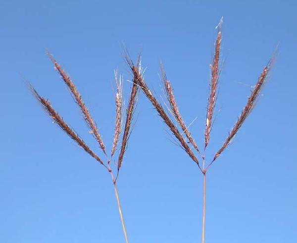

Marvel grass, bluestem, diaz bluestem, hindi grass, sheda grass, ringed dichanthium, vuda blue grass, kleberg blue stem, jargu grass, Delhi grass, two-flowered golden-beard, Santa Barbara grass [English]; karad [English/India]; pitilla, climacuna, yerba de vias [Spanish]; vleivingergras [Afrikaans]; 双花草 [Chinese]
Dichanthium annulatum (Forssk.) Stapf [Poaceae]
Andropogon annulatus Forssk., Andropogon papillosus Hochst. ex A. Rich., Dichanthium nodosum Willemet, Dichanthium papillosum (Hochst. ex A. Rich.) Stapf
Marvel grass (Dichanthium annulatum (Forssk.) Stapf) is a tropical grass originally from North Africa and India that is used for pasture in tropical and subtropical zones. It is particularly used in India.
Dichanthium annulatum is a tufted perennial, 60-100 cm high (Ecocrop, 2010; Clayton et al., 2006). It has an important root system, down to 1 m deep (FAO, 2010). Culms are erect and decumbent, 25-100 cm long. Leaf-blades are linear, 3-30 cm long, 2-7 mm wide, pubescent at the margins (Clayton et al., 2006; Cook et al., 2005). The inflorescences are composed of 2-15 racemes, each 3-7 cm long (Clayton et al., 2006). The seed is a 2 mm long, oblong-obovate caryopsis (US Forest Service, 2010).
Marvel grass is an excellent and widely used fodder grass much appreciated by all classes of ruminants. In mixed pastures, marvel grass is preferred to all other grasses (Cook et al., 2005; Manidool, 1992). Marvel grass can be used in pastures, in cut-and-carry systems or for hay and silage making if it is cut before flowering (FAO, 2010; Cook et al., 2005; Manidool, 1992). In India, it withstood very heavy grazing and supported 7 sheep per ha. It gives a good standing hay (Manidool, 1992). It is a highly preferred grass in India (Gupta et al., 1995).
Marvel grass originates from North Africa and India. It was introduced to Southern Africa, tropical America, the Caribbean, South-East Asia, China, the Pacific Islands and Australia (Ecoport, 2010; Manidool, 1992). Marvel grass is mainly found within 8-28° in the Northern hemisphere, at elevations between sea level and 600 m (up to 1375 m in India), in dry to moist subtropical and tropical areas. It grows in pasture land, roadsides, fallow fields, weedy lawns, sandy dunes and open wastelands (FAO, 2010; Cook et al., 2005).
Optimal growth conditions are annual rainfall ranging from 500 to 1400 mm (FAO, 2010; Cook et al., 2005), with warm season temperatures (Cook et al., 2005), on heavy black clays with the pH ranging from neutral to alkaline. Marvel grass is more or less tolerant to water stresses (drought or short-term waterlogging or flooding) and withstands annual rainfall as low as 300 mm and as high as 2600 mm (Ecocrop, 2010; FAO, 2010; Cook et al., 2005). It is remarkably tolerant of alkaline and saline soils (FAO, 2010) and bears seasonal burning (Cook et al., 2005).
Marvel grass yields between 1.5 and 6 t DM/ha (Ecocrop, 2010; Cook et al., 2005) but up to 17 t DM/ha have been recorded from irrigated grass in dry environments (Cook et al., 2005). Marvel grass does not normally require added fertilizer, but it responds positively to low and moderate levels of N. It could be valuable for re-seeding degraded grasslands (Cook et al., 2005). It is not recommended to use it in mixed pastures as it outcompetes other grasses (FAO, 2010). However, some grasses such as Bothriochloa insculpta, Dichanthium aristatum, Dichanthium caricosum and legumes such as Desmanthus spp., Medicago sativa, Stylosanthes hamata and Stylosanthes seabrana may compete successfully with marvel grass (Cook et al., 2005).
Soil erosion control
Marvel grass is one of the best grasses for soil erosion control and ground cover: it helps binding the soil even on 20° slopes